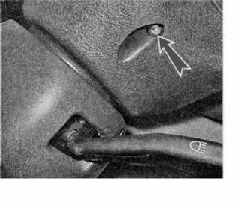
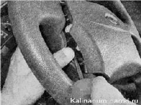
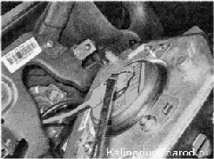
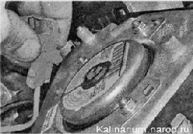
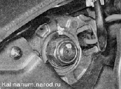
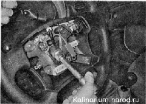
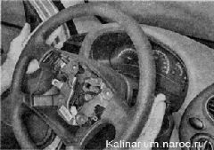
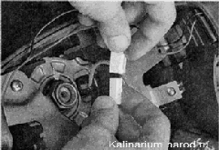
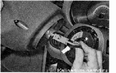

Рулевое колесо снятие и установкаРабота показана на автомобиле, оборудованном подушкой безопасности. Операция на автомобиле без подушки безопасности выполняется аналогично. Снятие 1. Подготавливаем автомобиль к выполнению работы , снимаем клемму с отрицательного вывода аккумуляторной батареи. Внимание! На автомобиле, оборудованном подушкой безопасности, во избежание срабатывания подушки после отсоединения аккумуляторной батареи выждите не менее пяти минут перед продолжением работы. Снятый модуль подушки безопасности укладывайте исполнительным механизмом вниз и вдали от рабочего места. 2. Устанавливаем передние колеса автомобиля в положение прямолинейного движения. 3. С двух сторон рулевого колеса шестигранным ключом на 5 мм отворачиваем по одному болту крепления модуля подушки безопасности.   5. Отведя модуль подушки безопасности от рулевого колеса, лезвием шлицевой отвертки освобождаем фиксатор колодки провода.  6. Отсоединяем колодку провода от модуля подушки безопасности и снимаем накладку в сборе.  7. При необходимости установки рулевого колеса в прежнем положении любым доступным способом (маркером, фломастером, тонким зубилом) делаем установочные метки на валу и рулевом колесе.  8. Торцовым ключом на 24 мм с удлинителем отворачиваем гайку крепления рулевого колеса и оставляем гайку на нескольких витках резьбы вала. 
9. Последовательными ударами ладоней по ободу рулевого колеса с правой и левой сторон, сбиваем его со шлицев вала. Совет Если показанным способом снять рулевое колесо не удается, ослабляем его крепление на шлицах вала. Для этого наворачиваем гайку заподлицо с валом и наносим несколько ударов молотком по торцу вала через выколотку из мягкого металла, одновременно подпирая рулевое колесо коленями на себя. 10. Разъединяем колодки проводов выключателя звукового сигнала и отворачиваем гайку крепления рулевого колеса. 
11. Снимаем рулевое колесо с вала, при этом вытягиваем провода контактного кольца вместе с колодками из отверстия ступицы рулевого колеса. 
При снятии рулевого колеса подвижная часть контактного кольца фиксируется запорными механизмом, что предотвращает ее вращение. Не следует нажимать на кольцо фиксатора, и вращать подвижную часть контактного кольца. В результате при сборке может быть нарушено центральное положение подвижной части кольца. При этом велика вероятность повреждения контактного кольца при повороте рулевого колеса в одно из крайних положений. Установка Устанавливаем рулевое колесо в обратной последовательности, совместив ранее сделанные метки и установив новую самоконтрящуюся гайку. Совет Если необходимо установить рулевое колесо в новом положении (например, при прямолинейном движении автомобиля, спицы руля расположены под наклоном), наденьте колесо на вал и зафиксируйте его гайкой, не затягивая ее. Проехав прямо несколько метров, убедитесь в правильном его положении. При необходимости переставьте рулевое колесо на требуемое количество шлицев и затяните гайку. Гайку крепления рулевого колеса затягиваем моментом 31,4-51 Нм (3,2-5,2 кг\см). |